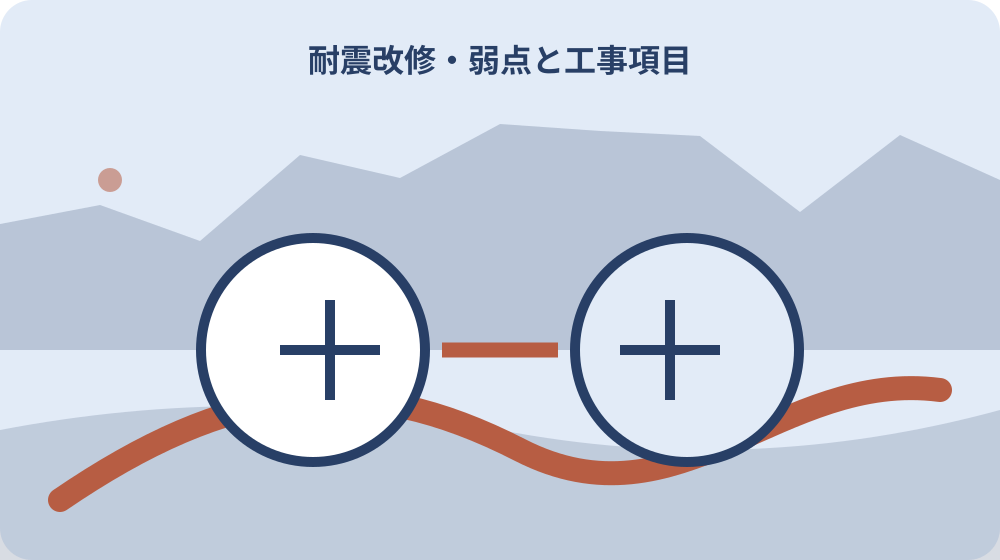

先に結論を確認する
この記事の答え：診断書の指摘箇所、補強計画の図面番号、見積書の工事項目を同じ行へ置きます。対応が分からない項目は推測せず、相談士と施工者へ目的と施工場所を確認してください。
森町で最初に照合する条件：昭和56年5月以前に建築された木造住宅か資料で確認する
耐震診断結果と見積書を同じ表で読む
森町で木造住宅の耐震改修を考えるとき、見積総額だけを先に比べると、診断で指摘された弱点と工事項目の対応が見えません。診断書の部位、補強計画の対処、見積書の工事項目、改修後の評価を一行ずつ結ぶことから始めます。
森町は、木造住宅の補強計画の策定と、その計画に基づく耐震改修工事を一体で行う補助制度を案内しています。計画だけを作って工事を別に切り離す制度ではないため、設計内容と施工内容がつながっているかが重要です。
最初に用意するのは、耐震診断結果、建物の平面図、補強計画、工事見積書、現況写真です。資料の日付と住宅の所在地をそろえ、古い診断書と別の改修案を混ぜないよう、表紙に確認日を書きます。
この記事が扱うのは、工事の良し悪しを判定することではありません。診断、設計、見積り、申請の間に抜けがないかを所有者が確認し、相談士、施工者、森町へ具体的な質問を渡せる状態を作ることです。
対応表には、診断書・計画図・見積書のページ番号も記します。名称が似た資料を家族から受け取っても、どの版を見ればよいか迷わず、質問した箇所を同じ画面や紙面で開けます。
無料の専門家診断から確認する
森町の無料診断は、町から専門家を派遣して行う制度です。対象は昭和56年5月以前に建築された木造住宅で、同じ住宅についてまだこの診断を受けていないことが条件として示されています。
申込みは定住推進課の窓口で受け付けられ、電話での申込みも可能です。中古住宅を取得したばかりの場合や建築年が曖昧な場合は、固定資産関係資料や登記事項、売買時の資料をそろえて対象年を確認してから相談します。
診断結果は数字だけを転記せず、どの階、どの方向、どの壁や接合部が評価に影響したかを確認します。所有者が工法を決める必要はありませんが、見積書に対応する説明があるかを探せる程度に、指摘箇所を平面図へ印します。
以前に増築、間取り変更、屋根の葺き替えをしている家では、診断時の建物と現在の状態が同じかも確認します。資料と現況が違えば、その差を隠さず相談士へ伝え、現在の建物を基準に何を再確認するか尋ねます。
申込み後の訪問日に備え、床下点検口、天井裏への入口、家具で隠れた壁を確認します。専門家が確認できない場所が生じそうなら、家具移動の要否を事前に尋ね、当日に無理な作業をしません。
補助対象となる評点と住宅条件
森町の耐震改修事業は、昭和56年5月以前に建築された木造住宅を対象としています。さらに現在の1階部分の耐震評点が1.0未満で、改修後に1.0以上とする補強工事であることが示されています。
補強計画は静岡県耐震診断補強相談士が作成したものに基づく必要があります。施工会社の見積りだけが先にあり、相談士が作成した補強計画との対応が示されていない場合は、申請準備を進める前に関係を確認します。
評点1.0以上という条件は、住宅のあらゆる危険がなくなるという意味ではありません。地盤、擁壁、家具転倒、瓦屋根、ブロック塀などは別の確認事項になるため、耐震改修の見積書だけで敷地全体の安全を断定しないようにします。
県の案内では、補強計画の策定時に改修前後の耐震性を評価し、設計と積算を行う流れが示されています。森町の条件と県の説明を並べ、住宅ごとの計画に必要な評価資料が何かを相談士へ確認します。
建築年を示す資料が複数ある場合は、登記日、課税上の建築年、確認申請資料、家族の記憶を混ぜずに並べます。対象条件の判断は森町へ資料を示し、所有者だけで古い家だと決めません。
補強計画の図面と診断結果を対応させる
補強計画を受け取ったら、診断書の指摘番号と計画図の補強位置を対応させます。壁の追加、既存壁の補強、接合部の金物、基礎への対処、屋根重量への対応など、計画に記載された内容を工事場所ごとに分けます。
図面上の記号が分からないときは、推測で工事項目名を付けません。記号の凡例、使用材料、施工範囲、既存部分を残す箇所を相談士へ聞き、家族にも分かる短い説明を横に書きます。
一つの指摘に複数の工事が関係する場合があります。例えば壁だけでなく、その両端の柱や金物、床下や天井の開口、仕上げの復旧まで必要になることがあるため、見積書の一行だけで対応が完結すると決めつけません。
反対に、見積書に大きな工事項目があるのに補強計画で位置や目的を確認できない場合は、耐震工事と同時に行う一般改修かもしれません。耐震補助の対象範囲と自己負担の改修を分けて説明してもらいます。
補強後の間取りや窓の使い勝手が変わる計画では、構造上の目的と暮らしへの影響を同時に聞きます。図面へ家具位置や通路も重ねると、完成後に扉が開かないなどの行き違いを減らせます。

見積書を工事場所と目的で分ける
見積書は、仮設、解体、構造補強、仕上げ復旧、設備移設、諸経費などに分けて読みます。総額だけで比較せず、どの部屋のどの補強に必要な費用かを補強計画の番号と結びます。
同じ『壁補強』でも、材料、壁の長さ、施工面、既存仕上げ、床や天井の開口範囲で費用は変わります。単価だけを比べる前に、数量と施工条件が同じかを確認し、条件が違う見積りを同額基準で評価しないようにします。
耐震工事と同時に断熱、内装、水回りなどを直す場合は、見積書で区分を分けてもらいます。補助対象費用、補助対象外費用、どちらにも関係する共通仮設の扱いを曖昧にしたまま申請額を見込まないことが大切です。
値引きがある場合も、どの工事項目から差し引いたのかを確認します。後から仕様変更が出たときに基準額が分からなくならないよう、当初見積り、変更見積り、最終精算を別版として保管します。
複数社の見積りを比べる場合は、同じ補強計画と現況資料を渡したかを確認します。前提資料が違えば金額差の理由を判断できないため、見積依頼日と渡した図面の版も比較表へ記録します。
着工前申請と資金の時間差
森町は、補助制度を利用する場合は必ず工事着手前に申請し、交付決定前に着手すると補助を受けられないと案内しています。契約、材料発注、解体開始のどこを着手と扱うかは、実行前に担当窓口へ確認します。
補助金は、申請者が補助対象費用を支払った後に支払われるため、一時的に費用全額の負担が生じます。補助額だけを差し引いた資金を用意するのではなく、支払日と補助金受領までの資金繰りを確認します。
森町の耐震改修事業は一戸につき上限120万円と案内されています。ただし、実際の交付額は対象費用や申請条件で決まるため、見積総額から機械的に120万円を引いた額を最終負担としないようにします。
また、予算がなくなり次第受付終了とされています。工事時期を先に確定してから申請枠を期待するのではなく、診断結果と計画の見通しが立った段階で、その年度の受付状況と提出期限を確認します。
申請用の添付書類を集める担当と、工事契約を確認する担当を分ける家庭では、交付決定通知の到着を誰が施工者へ伝えるか決めます。連絡の行き違いによる早期着手を防ぐためです。
変更工事を口頭だけで進めない
工事中に腐朽、蟻害、図面と違う柱位置などが見つかると、当初計画のまま施工できないことがあります。現場での口頭合意だけで変更せず、相談士と施工者の役割を確認し、計画と見積りを更新します。
森町のページには計画変更承認申請書が掲載されています。どの変更が承認手続の対象になるかは所有者が独断で決めず、変更工事に着手する前に定住推進課へ事情を伝えます。
変更記録には、発見日、場所、写真、当初図面、変更理由、代替案、金額差、工期への影響を書きます。家族が後から見ても、なぜ工事内容と当初見積りが違うのかをたどれる形にします。
追加費用が発生しても、耐震補助の対象になるとは限りません。耐震性を確保するための変更と、劣化修繕や内装希望による変更を分け、補助対象の判断は森町へ確認します。
現場で変更を提案されたときは、今日決めなければならない理由も確認します。安全確保のため直ちに止める作業と、資料を更新してから選べる工事を分け、判断期限を記録します。
実績報告と工事確認まで見通す
森町の耐震改修ページには、実績報告書、工事確認書、補助金請求書などが掲載されています。申請が通れば終わりではなく、工事内容と支払いを証明して報告する段階までを予定に入れます。
施工中は、仕上げで隠れる金物、壁内部、基礎補強などの写真を残す時期を施工者と決めます。完成後に見えない部分は、撮影場所と図面番号を対応させ、別の部屋の写真と混ざらないようにします。
請求書と領収書は、見積書の工事項目や変更履歴とつながる形で保管します。耐震工事以外の改修を同時に行った場合は、支払いの内訳が判別できるよう施工者へ書類の分離を相談します。
工事確認の結果、補強計画どおりであることをどの資料で示すかも事前に聞きます。工事直前になって必要な写真や書類へ気づくのではなく、着工前の打合せで報告書類の担当者を決めます。
完成時には、申請時の補強計画と最終図面を並べます。変更がなかった箇所も含め、実施済み、変更済み、未施工を区別しておくと、将来の改修で壁を開ける場所を検討しやすくなります。
暮らしながら行う工事の負担を整理する
耐震改修では、壁や天井を開ける部屋、家具を移す範囲、電気や水道を一時停止する時間が生じることがあります。工事費だけでなく、在宅できない時間、荷物保管、家族やペットの居場所も確認します。
高齢者や乳幼児がいる家庭では、騒音、粉じん、段差、仮設動線が日常生活へ影響します。工程表に居室ごとの使用不可日を入れ、通院や介護サービスの日と重ならないよう施工者へ相談します。
工期は天候や解体後の発見事項で変わる可能性があります。完成予定日だけでなく、変更時の連絡方法、鍵の管理、工事車両の駐車、近隣への説明担当を決めておくと混乱を減らせます。
空き家の改修では居住者がいなくても、現場確認を誰が行うかが必要です。遠方の所有者は、写真だけで承認する項目と現地立会いが必要な項目を分け、代理人の権限を施工前に共有します。
仮住まいが必要な場合は、家賃だけでなく、荷物移動、郵便、通院、通学、ペット、現場へ戻る交通も予定へ入れます。補助対象とは限らない生活費を工事予算と混ぜずに把握します。
制度の利点と限界を分けて考える
無料診断と改修補助があることで、所有者は専門家の評価を起点に耐震化を考えられます。森町の制度は、診断、補強計画、工事、実績報告という順序を示しており、相談の入口を見つけやすい点が利点です。
一方、補助対象になることと、見積りの全項目が必要かどうかは同じ判断ではありません。補助要件を満たしていても、工法、施工範囲、生活への影響、自己負担は住宅ごとに異なります。
また、耐震評点を上げる工事と、雨漏り、腐朽、設備老朽化を直す工事は目的が違います。同時に施工する利点があっても、耐震改修だけで住宅の全問題が解消すると説明しないことが重要です。
本格的な改修が難しい場合も、何もしないと決める前に相談できます。国の案内は、耐震改修や建替えの検討に加え、住宅内での安全確保などリスクを下げる方策も示しているため、家族状況に合う順序を相談します。
制度の対象外となる工事があることは、工事自体が不要という意味ではありません。住宅の劣化や暮らしの希望に必要な工事は、補助の判定と切り離して優先順位と支払時期を考えます。
家族へ残す耐震改修ファイル
家族用の耐震改修ファイルは、建物所在地、建築年、診断日、診断者、改修前評点、補強計画日、見積版、申請日、交付決定日、着工日、完成日を一枚目にまとめます。
二枚目以降は、診断の指摘、補強計画の図面番号、見積項目、施工写真、支払証拠を同じ行へ置きます。資料がない欄は推測で埋めず、誰へいつ確認するかを書きます。
所有者が変わる可能性のある家では、耐震改修済みという一言だけを伝えないようにします。実施範囲、改修後評価、同時施工した一般改修、今後の点検事項を分け、次の所有者が資料を追える状態にします。
暗証番号や口座情報はこのファイルへ入れません。補助金の通知、契約書、請求書など個人情報を含む原本は管理者を決め、家族共有版には保管場所と確認担当だけを記します。
紙資料をスキャンする場合は、表紙、全ページ、裏面、別紙を一つの組にします。ファイル名に住宅所在地、資料名、発行日を入れ、写真だけが別の家の資料へ紛れないようにします。
大石の視点：売却前に工事の意味を残す
ここまでの対象条件、申請時期、評点、補助上限、提出書類は森町と静岡県の公式情報で確認できる内容です。個別住宅の工法や費用の妥当性は、相談士、施工者、森町へ資料を示して確認する必要があります。
私、大石浩之は、改修するか売却するかを急いで決める前に、診断の弱点と見積項目を一行ずつ対応させることを勧めます。これは森町の指定様式ではなく、所有者が説明を受けるための実務的な整理方法です。
耐震改修済みという言葉だけでは、実施時期や範囲、改修後評価が伝わりません。将来の売却や相続を考えていなくても、図面、写真、申請、支払記録を残せば、家族が修繕判断を引き継ぎやすくなります。
今日できることは、診断書と見積書を机に並べ、対応が分からない項目へ印を付けることです。その一覧を持って相談士と森町へ確認し、回答を受けてから契約日や着工日を決める順序が安全です。
売却時に資料を渡す可能性があっても、個人情報を無条件に共有しません。工事内容を示す資料と、口座・補助金振込・家族連絡先を含む資料を分け、必要な範囲を確認して渡します。